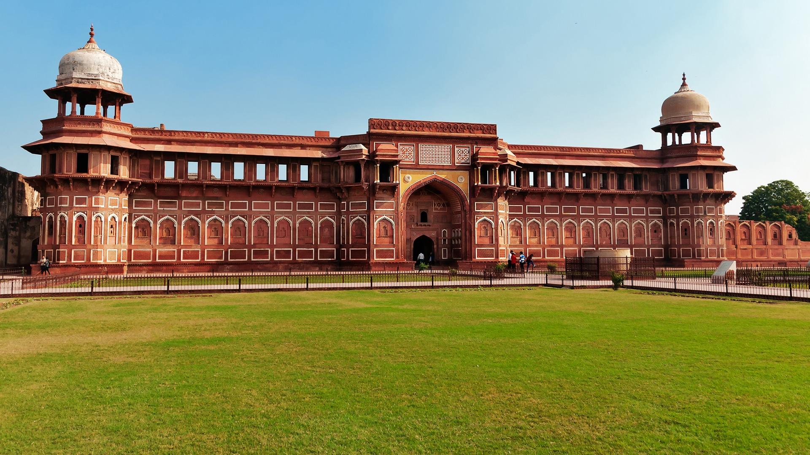

Delhi
Red Fort: A UNESCO World Heritage Site, this grand Mughal fort offers a glimpse into India's rich history.
Qutub Minar: The tallest brick minaret in the world, showcasing intricate Mughal architecture.
India Gate: A war memorial dedicated to Indian soldiers who died during World War I, with lush lawns and a tranquil ambiance.
Lotus Temple: A beautiful, flower-shaped temple known for its serene atmosphere and stunning architecture.
Humayun's Tomb: A UNESCO-listed tomb, considered a precursor to the Taj Mahal, set in lovely gardens.

Agra
Taj Mahal: The epitome of love, this white marble mausoleum is one of the Seven Wonders of the World and a must-see for any visitor to Agra.
Agra Fort: A historic fort that once served as the main residence of the Mughal emperors, offering amazing views of the Taj Mahal.
Fatehpur Sikri: A UNESCO World Heritage Site, this abandoned city was once the capital of the Mughal Empire and is home to stunning Mughal architecture.
Itmad-ud-Daula Tomb: Often referred to as the "Baby Taj," this tomb is an exquisite example of Mughal architecture with intricate marble inlay work.
Jaipur
Amber Fort: A majestic fort that combines Mughal and Rajput architecture, located on a hilltop offering panoramic views of the surrounding area.
Hawa Mahal: Known as the "Palace of Winds," this five-story palace with its honeycomb design is a perfect example of Rajasthani architecture.
City Palace: A beautiful blend of Mughal and Rajasthani architecture, the City Palace offers a glimpse into the royal heritage of Jaipur.
Jantar Mantar: An astronomical observatory with an impressive collection of architectural instruments.
Jaigarh Fort: Overlooking the Amber Fort, it houses one of the largest cannons on wheels, known as Jaivana.